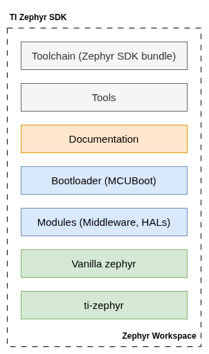

Introduction
Zephyr SDK is a west workspace based SDK that provides TI-specific samples and tests along with upstream Zephyr RTOS.
Block Diagram
Given below is a block diagram of the SW modules in this SDK,

Software Components
The main software components in the block diagram are described below. Except
for the toolchain, they are part of the Zephyr workspace, whose contents are
defined by the west manifest (west.yml) in ti-zephyr.
Software Component |
Documentation Page |
Description |
|---|---|---|
Toolchain (Zephyr SDK bundle) |
Cross-compilation toolchain and host tools from the Zephyr SDK bundle, used to build the SDK and applications. It is installed by the SDK installer; see Getting Started. |
|
Bootloader (MCUboot) |
MCUboot secure bootloader, imported from TI’s MCUboot fork into
|
|
Tools |
Host tools used while developing with the SDK, such as west for workspace management, building, flashing and debugging, and the flashing tools for the target SoC. |
|
Modules (Middleware, stacks, HALs) |
Hardware abstraction layers (such as |
|
Vanilla Zephyr |
The Zephyr RTOS (kernel, subsystems, device drivers, devicetree, board
and SoC support) from TI’s Zephyr repository ( |
|
ti-zephyr |
The SDK’s own Zephyr module and west manifest repository. It provides the TI-specific samples, tests, applications, devicetree bindings and out-of-tree drivers. |
Directory Structure
Given below is an overview of the directory structure to help you navigate the SDK and related tools.
The SDK is a west workspace. <sdk-install-dir> is the directory the SDK
installer installs it to, as used in Getting Started.
Directory |
Description |
|---|---|
|
Zephyr RTOS. directory. |
|
The |
|
Zephyr modules imported by the manifest: HALs, middleware and stacks. |
|
MCUboot ( |
|
Helper tools imported by the manifest, for example |
The ti-zephyr module is organized as follows:
|
Description |
|---|---|
|
West manifest; pins Zephyr and every TI-relevant module. |
|
Zephyr module description that registers the devicetree root, samples and tests of this repository with the build system. |
|
Out-of-tree drivers. |
|
TI samples; see Samples, Tests and Applications. |
|
Devicetree bindings, public headers and libraries. |
|
TI reference applications; see Samples, Tests and Applications. |
|
Shared CMake extensions. |
|
TI modules pending their own west projects. |
|
Development tooling. |
|
Sphinx sources of this documentation. |
Supported Hardware
Refer AM62L board support page for the supported boards.
Licenses
The licensing information of this SDK, as well as any third-party components included which are made available under a number of other open-source licenses are enumerated as part of the manifest. A complete manifest along with export control information is detailed here
Help and Support
For additional help and support, see https://e2e.ti.com/support/processors/f/processors-forum